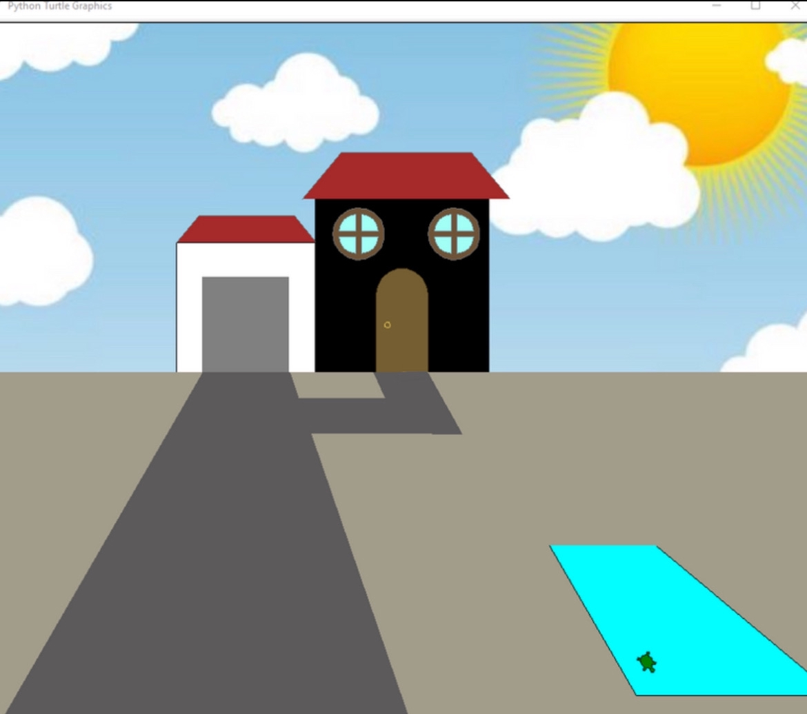
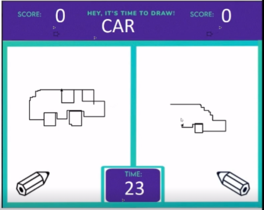

✶ ⋆｡˚MY PORTFOLIO PAGE!˚｡⋆ ✶
🏠 Project 1.1.9: Design Your Own House 🏠

Our first project was for the user to customize and design their own house. The customizations include name of the house, color of the house, choose between having a concrete front yard or grass yard, color and shape of the roof, shape of the window, and adding a pool. We set conditional statements to allow the customizations to work. Using iteration, a turtle swims in the users pool in the end of running the program.
✏️ Project 1.2.5: Drawing Competition ✏️

We created a drawing competition between two players for three rounds. After a round the players would decide who they believe to have the best drawing and add the score to the player by clicking on a turtle next to their score. They are given three different prompts and after the game ends it will display which player won the game.
🥪 Scratch Project: Sandwich Creator 🥪
We created a sandwich shop game where a customer asks for a random sandwich and the user has to click on the right ingredients for the sandwich. If the ingredients match the customer's request, you get a dollar and if not, you get it wrong and have 3 chances before the game ends.